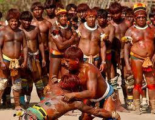
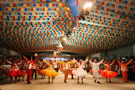
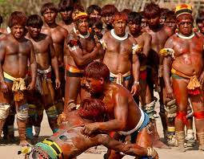
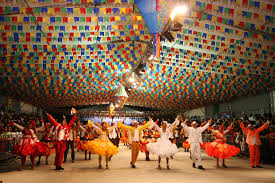

A cultura brasileira nasceu através da miscigenação dos povos indígenas que já habitavam no brasil, mas logo no em 1500 os portugueses chegaram até as terras dos indígenas, os povos nativos mantinham as suas crenças e praticavam seus elementos culturais aliados a um modo de vida simples e em contato com a natureza.
No século XVII, devido ao grande número de engenhos de cana-de-açúcar, os europeus começaram a capturar e trazer os negros africanos, à força, para o Brasil, como escravos. Esses, tiranicamente escravizados, trouxeram consigo elementos da sua cultura e de seus hábitos, como as religiões de matriz africana, a sua culinária e seus instrumentos musicais.
No século XIX, o Brasil vivenciou mais um processo migratório composto por trabalhadores italianos que vieram trabalhar nas lavouras de café, quando os primeiros indícios da abolição da escravatura já apontavam no governo brasileiro. Outros grandes fluxos migratórios significativos aconteceram durante a Segunda Guerra Mundial, quando japoneses, alemães e judeus buscaram refúgio em terras brasileiras.
Toda essa vastidão de povos provocou a formação de uma cultura plural e de culturas diferentes. As diferenças geográficas também contribuíram para que o processo cultural brasileiro se tornasse plural e diversificado.
Se considerarmos como exemplo a música sertaneja de raiz, encontramos nela elementos que remetem à vida no campo. Já o funk carioca fala da vida nas favelas, de onde ele surgiu. A literatura de cordel, por sua vez, trata de temas recorrentes ao sertanejo nordestino, enquanto os elementos da vida gaúcha tratam da vida dos povos que se estabeleceram no Sul do país, sob influência de alemães e argentinos.
 


